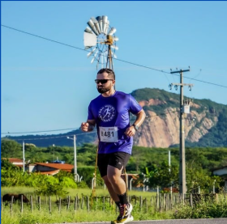
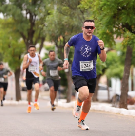
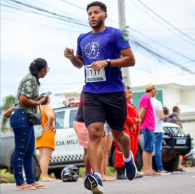

Somos uma comunidade apaixonada pelo esporte, formada por pessoas que acreditam na força do coletivo
e na superação individual. Juntamos apoio e performance. Temos um grupo aberto para iniciantes e
amantes da corrida, além de uma equipe de atletismo amador focada em evolução, treinos direcionados
e participação em provas pela região. Juntos, corremos mais longe!
Seja para começar a correr ou para buscar novos desafios, aqui é o seu lugar.
São Miguel Runners – Corpo em movimento, mente livre!
Nossa equipe já participou de diversas provas e eventos na região, sempre com união, energia positiva e
vontade de fazer bonito. Além disso, trabalhamos com provas-alvo ao longo do ano, com eventos escolhidos
estrategicamente para treinar em grupo, viajar juntos e representar São Miguel com orgulho.
Aqui, mais do que correr, você vai construir amizades, superar limites e fazer parte de uma equipe que
cresce unida, passo a passo.
Depoimentos

Rivone Silva:
“Tudo começou com um desafio: o teste de aptidão física para a polícia. Na época, encarei a corrida
como uma obrigação, algo necessário para atingir um objetivo maior. Mas, com o tempo, percebi que
aquilo que começou como um preparo físico acabou se transformando em paixão.
A cada treino, fui superando meus próprios limites, e a corrida deixou de ser apenas uma meta –
virou um estilo de vida. Encontrei na pista muito mais do que saúde e condicionamento: encontrei
amizades verdadeiras e uma nova família.
Hoje, fazer parte da equipe São Miguel Runners é motivo de orgulho. Os laços que criei aqui são
fortes e verdadeiros. A energia dos treinos, o apoio mútuo e a motivação constante fazem toda a
diferença. Correr com essa galera é mais do que esporte – é conexão, superação e alegria.”

Alexandre Batalha:
“A corrida tem me ajudado em muitos aspectos da vida. Melhorou minha saúde, me tornou mais
disciplinado e me afastou de hábitos que não me faziam bem. Hoje, estou mais próximo de tudo que
realmente contribui para o meu crescimento!”
"Correr não é apenas um esporte, é um estilo de vida."

Rubens Guilherme:
“Antes de conhecer a corrida, eu levava uma vida bastante ociosa.
Sempre gostei de esportes, mas por muito tempo fui apenas um
espectador, assistia, admirava, mas não participava. Me via apenas
vivendo, sem muita motivação, sem energia, sem foco.
A corrida me trouxe disciplina, melhorou minha saúde física e,
principalmente, minha saúde mental. Hoje me sinto mais leve, mais
disposto e com mais clareza para enfrentar os desafios do dia a dia.
E parte fundamental dessa transformação foi fazer parte da equipe São
Miguel Runners. Aqui encontrei incentivo, parceria, amizade e uma
motivação constante para continuar evoluindo. Sou muito grato por
tudo que a corrida me proporcionou.”
Calendário de Corridas
Inscreva-se
Clube de apoio
Somos uma comunidade de corredores de São Miguel que compartilha treinos, dicas,
experiências, desafios e muita motivação. Aqui, cada quilômetro é celebrado, seja você
iniciante ou maratonista experiente.
Nosso objetivo é apoiar uns aos outros, promover encontros para correr juntos e incentivar
hábitos de vida saudáveis com respeito, acolhimento e energia positiva.
Buscamos atletas de todos os níveis que tenham comprometimento, vontade de crescer e que
queiram representar São Miguel com garra e respeito nas pistas e nas ruas. Independente do
seu objetivo, seja para superar um tempo pessoal ou simplesmente cruzar a linha de chegada
com orgulho.
Preencha seus dados com atenção. A coordenação fará uma análise. As pessoas que se
identificarem com a proposta serão convidadas a participar.